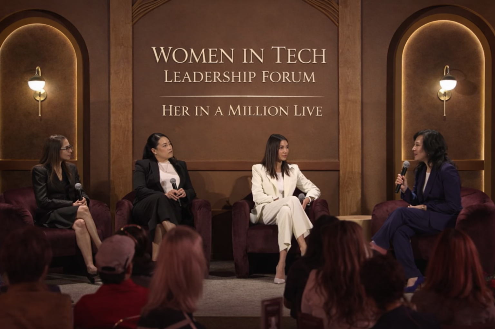

New
Watch Now
How Powerful Women Tackle Tech in Business
Three women leaders in business discuss the growing role of new technologies like AI. Panel moderated by TIME senior correspondent Alice Park at the TIME Women of the Year Leadership Forum.